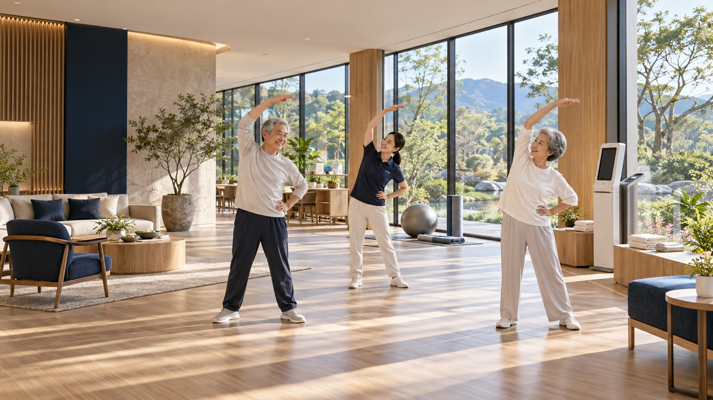

대한민국
65세 이상 고령자 수
1,000만+
전체 인구의 약 18.4%
대한노인회정보화사업단은 시니어의 디지털 격차를 줄입니다. 익숙한 공간에서 새로운 기술을 만나고, 배움과 참여가 자연스럽게 이어지는 환경을 만듭니다.
디지털로 연결하는
건강하고 행복한 삶.
다양한 정보화 교육 프로그램과 디지털 기기 지원을 통해 노인들이 디지털 시대에 적극적으로 참여할 수 있도록 돕습니다.
전체 인구의 약 18.4%
일반화된 고령자의 디지털 이용
주로 정보 검색, SNS, 영상 시청
(사)대한노인회는 2008년 대한노인회 중앙회의 임원진의 발의에 의하여 2009년 전국 경로당 핸드폰 이용실태 설문조사를 시작으로 2010년 경로당 선진화·활성화 방안을 위한 포럼 개최, 2017년 지식정보화 사회에서 경로당의 발전 방향 좌담회 개최 등 대한노인회 및 경로당의 디지털 전환과 노인들의 디지털 격차 해소를 위한 사업을 협회의 핵심사업으로 추진하고 있습니다.
그러나 (사)대한노인회는 사업을 추진하는 과정에서 반드시 필요한 정보통신 분야와 관련 시스템의 개발 및 유지보수는 물론 ICT 기업과의 협력이 절실하였으나 대한노인회의 성격과 예산 등으로 인해 자체 조직을 보유하기가 불가능하다고 판단하여 다양하고 광범위한 분야의 ICT와 콘텐츠 기업들을 효과적으로 컨트롤하고 실무를 수행하기 위한 특수목적 법인이 필요하였습니다.
이에 (사)대한노인회는 2023년 신설 법인의 역할과 사업의 범위를 확정하고, 인력의 충원 등 설립 준비를 마치고 2023년 8월 1일 ‘대한노인회정보화사업단(주)’라는 상호로 법인을 출범하였습니다.
어르신이 머무는 공간부터
건강한 생활, 새로운 배움까지.
익숙한 공간에 새로운 가능성을.
어르신이 매일 찾는 경로당에 디지털 환경을 더합니다. 공간과 기기, 함께 즐기는 콘텐츠를 하나의 이용 경험으로 연결합니다.

건강한 일상을 만드는 공간.
공동주택과 시니어 커뮤니티의 환경에 맞춰 디지털 전환을 지원합니다. 건강 관리부터 운동과 여가까지, 일상 속 활동의 폭을 넓힙니다.
배움에는 끝이 없으니까.
건강, 금융, 법률, 문화까지. 생활에 필요한 지식과 다양한 교육 콘텐츠를 더 쉽게 만나도록 시니어의 배움과 정보 접근을 돕습니다.
더 가까운 디지털 일상을 향해
이어온 사업단의 발자취입니다.
시니어 디지털 전환의 시작
권고모델 시범사업 · 10개 경로당
스마트경로당 모델 보급 · 41개
스마트경로당 모델 보급 · 65개
스마트경로당 모델 보급 · 80개
공간에 맞는 디지털 전환이 궁금하신가요?
사업과 협력에 대해 편하게 이야기해 주세요.